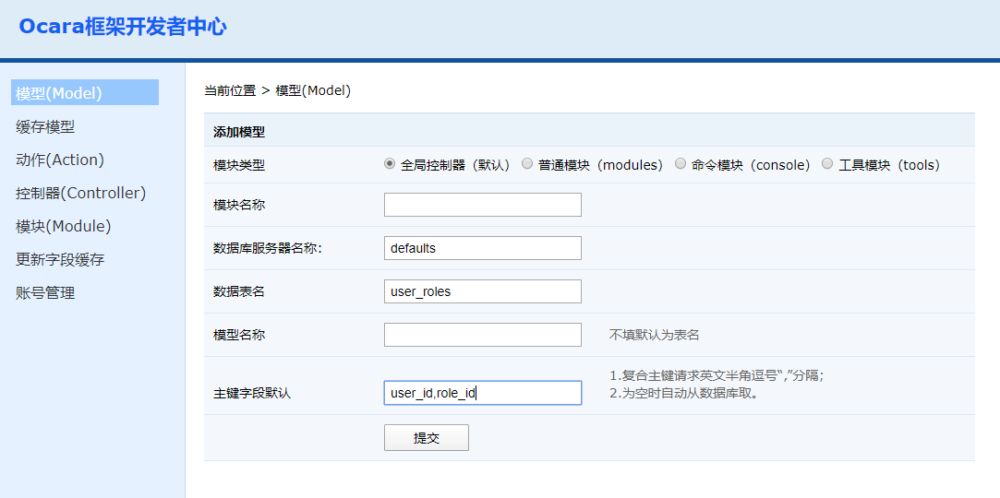

2.5 添加数据模型（Model）
（1）进入开发者中心，点击左边的"控制器（Model）"菜单。右边会出现新建控制器的界面。 添加选项介绍
模块类型： 参考2.3_添加控制器 模块名称： （1）全局控制器（默认）填写空。 （2）其他三种模块填写：模块名。如：admin 数据库服务器名称 必填。即application/config/database.php中的相关配置键名。 数据表名
必填，数据表的名称。
模型
可选，模型名称，首字母不需要大写。
不填写时，默认为表名，下划线分隔时会变成驼峰式命名。如user_roles，模型类名会是UserRolesModel。
主键字段
必填，数据表的主键字段。
（1）单字段主键直接填字段名，如user_id；
（2）复合主键要用英文逗号“,”分开，如user_id,role_id。
数据表名
必填，数据表的名称。
模型
可选，模型名称，首字母不需要大写。
不填写时，默认为表名，下划线分隔时会变成驼峰式命名。如user_roles，模型类名会是UserRolesModel。
主键字段
必填，数据表的主键字段。
（1）单字段主键直接填字段名，如user_id；
（2）复合主键要用英文逗号“,”分开，如user_id,role_id。